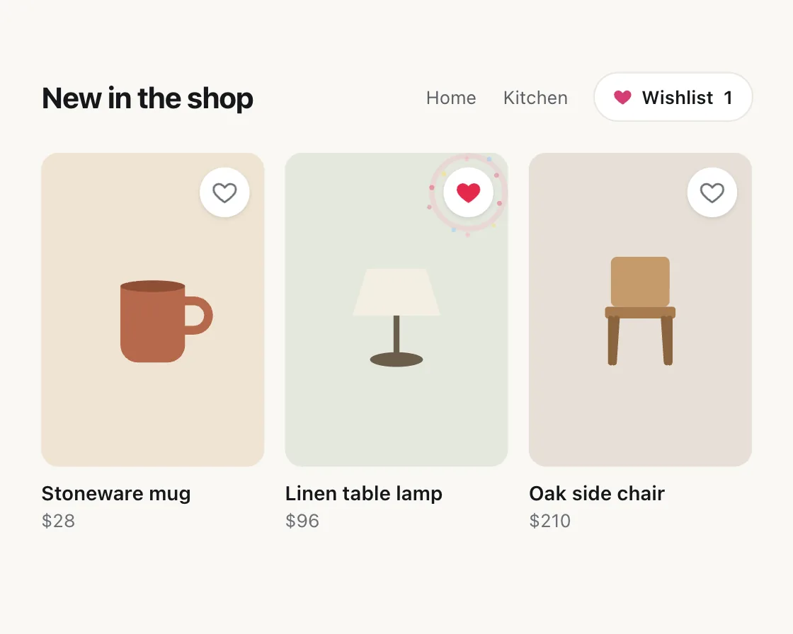

Like burst
Like burst is a DOM effect: squash, pop, ring and sparks on one beat. One plain JavaScript file with no dependencies; add it with npx motion-library add like-burst.

Open it live, tune it and copy the code
What is Like burst?
A saved product’s heart squashes, pops past full size and settles as a ring and dots fire.
How does Like burst work?
Every part starts on the same frame so it reads as one event, and the sparks pick fresh random angles each time.
How do I add Like burst to my website?
- In your project folder, run
npx motion-library add like-burst. It writesanimations/like-burst.js. Needs Node 18 or newer. - Import it and call it with a container element that has a size:
import fx from './animations/like-burst.js'; const stop = fx(document.querySelector('#hero')); - Call
stop()to clean up, for example when a component unmounts.
Every setting below is also a flag, so you can install it already tuned: npx motion-library add like-burst --particles 24.
What settings can I tweak?
| Setting | Flag | Default | Range | Step |
|---|---|---|---|---|
| Sparks | --particles | 10 | 4 to 24 | 1 |
| Spread | --spread | 1 | 0.4 to 2 | 0.05 |
Specifications
- Renderer
- DOM (CSS and the Web Animations API)
- Category
- Micro & loading
- Dependencies
- None
- File size
- 7.5 KB, unminified
- Interactive
- No: it plays on its own
- Reduced motion
- Respects prefers-reduced-motion
- Licence
- MIT-0: use it anywhere, no credit needed
Source code
// Like burst on a shop's wishlist hearts: the heart squashes on press, pops past full size and settles, while a ring and a
// spray of dots fire from its centre on the same frame, and the wishlist count in the header bumps.
// It feels right because everything starts together, so it reads as one event: a small celebration for a small decision.
const PARAMS = { particles: 10, spread: 1 };
export default function (stage) {
const reduce = matchMedia('(prefers-reduced-motion: reduce)').matches;
const W = 540, H = 380;
const items = [
['Stoneware mug', '$28', '#efe3d3', '<path d="M54 42h44v40a12 12 0 0 1-12 12H66a12 12 0 0 1-12-12z" fill="#b5694b"/><path d="M98 52h6a10 10 0 0 1 0 20h-6" fill="none" stroke="#b5694b" stroke-width="6"/><ellipse cx="76" cy="42" rx="22" ry="4" fill="#8f4f36"/>'],
['Linen table lamp', '$96', '#e3e8de', '<path d="M56 30h40l10 32H46z" fill="#f4efe2"/><rect x="74" y="62" width="4" height="26" fill="#6b5d4a"/><ellipse cx="76" cy="92" rx="18" ry="5" fill="#6b5d4a"/>'],
['Oak side chair', '$210', '#e6dfd6', '<rect x="56" y="22" width="40" height="34" rx="4" fill="#c49a6c"/><rect x="52" y="56" width="48" height="8" rx="2" fill="#a77b4f"/><path d="M56 64v30M96 64v30M60 64l-2 30M92 64l2 30" stroke="#8a643f" stroke-width="4" stroke-linecap="round"/>'],
];
const heart = '<svg viewBox="0 0 24 24"><path d="M12 21s-7.5-4.6-9.6-9.2C.9 8.4 3 4.5 6.7 4.5c2.2 0 3.6 1.2 5.3 3.2 1.7-2 3.1-3.2 5.3-3.2 3.7 0 5.8 3.9 4.3 7.3C19.5 16.4 12 21 12 21z"/></svg>';
const root = document.createElement('div');
root.className = 'lb-root';
root.innerHTML = `<style>
.lb-root { position: absolute; inset: 0; overflow: hidden; background: radial-gradient(120% 100% at 50% 0%, #1b1b1e, #0d0d0f); font-family: system-ui, -apple-system, "Segoe UI", sans-serif; color: #15171a; }
.lb-scene { position: absolute; left: 0; top: 0; width: ${W}px; height: ${H}px; transform-origin: 0 0; background: #faf8f5; border-radius: 18px; } /* a window in the demo's own colour on the library's dark ground */
.lb-top { position: absolute; left: 28px; right: 28px; top: 24px; display: flex; align-items: center; gap: 18px; font-size: 12.5px; color: #5b6066; }
.lb-top h2 { margin: 0 auto 0 0; font-size: 20px; font-weight: 720; letter-spacing: -0.02em; color: #15171a; }
.lb-wish { display: flex; align-items: center; gap: 6px; height: 32px; padding: 0 12px; border-radius: 999px; background: #fff; box-shadow: 0 0 0 1px #ebe6df; color: #15171a; font-weight: 600; }
.lb-wish svg { width: 14px; height: 14px; fill: #d63c74; } .lb-n { display: inline-block; min-width: 8px; font-variant-numeric: tabular-nums; }
.lb-grid { position: absolute; left: 28px; right: 28px; top: 78px; display: grid; grid-template-columns: repeat(3, 1fr); gap: 14px; }
.lb-card { position: relative; }
.lb-img { height: 214px; border-radius: 12px; display: grid; place-items: center; } .lb-img svg { width: 152px; height: 116px; }
.lb-card b { display: block; margin-top: 10px; font-size: 13.5px; font-weight: 600; } .lb-card span { font-size: 12.5px; color: #6b7076; }
.lb-btn { position: absolute; right: 10px; top: 10px; width: 34px; height: 34px; border-radius: 50%; border: 0; padding: 0; background: #fff; cursor: pointer; box-shadow: 0 1px 3px rgba(0,0,0,.12); display: grid; place-items: center; }
.lb-btn svg { position: relative; width: 18px; height: 18px; z-index: 1; } .lb-btn path { fill: none; stroke: #6b7076; stroke-width: 1.8; transition: fill .15s, stroke .15s; }
.lb-btn.on path { fill: #e5294c; stroke: #e5294c; }
.lb-ring { position: absolute; inset: -4px; border-radius: 50%; border: 3px solid #ff8fab; opacity: 0; pointer-events: none; }
.lb-spark { position: absolute; left: 50%; top: 50%; width: 6px; height: 6px; margin: -3px; z-index: 2; border-radius: 50%; opacity: 0; pointer-events: none; }
</style><div class="lb-scene">
<div class="lb-top"><h2>New in the shop</h2><span>Home</span><span>Kitchen</span><span class="lb-wish">${heart}Wishlist <span class="lb-n">0</span></span></div>
<div class="lb-grid">${items.map(([n, p, bg, art]) => `<div class="lb-card"><div class="lb-img" style="background:${bg}"><svg viewBox="0 0 152 116">${art}</svg></div><button class="lb-btn" type="button" aria-label="Save ${n}" aria-pressed="false"><span class="lb-ring"></span>${heart}</button><b>${n}</b><span>${p}</span></div>`).join('')}</div>
</div>`;
stage.append(root);
const scene = root.querySelector('.lb-scene'), count = root.querySelector('.lb-n');
const fit = () => { const w = stage.clientWidth, h = stage.clientHeight, s = Math.min(w / W, h / H, 1.3) * 0.9; scene.style.transform = `translate(${(w - W * s) / 2}px, ${(h - H * s) / 2}px) scale(${s})`; };
const ro = new ResizeObserver(fit); ro.observe(stage); fit();
const btns = [...scene.querySelectorAll('.lb-btn')];
const colours = ['#e5294c', '#ffd43b', '#ff8fab', '#74c0fc', '#d63c74'];
const ease = 'cubic-bezier(0.23, 1, 0.32, 1)';
const anims = new Set();
const play = (el, kf, o) => { const a = el.animate(kf, o); anims.add(a); a.onfinish = () => anims.delete(a); return a; };
const tally = () => {
count.textContent = btns.filter(b => b.classList.contains('on')).length;
play(count, [{ transform: reduce ? 'none' : 'translateY(5px)', opacity: 0 }, { transform: 'none', opacity: 1 }], { duration: 220, easing: ease });
};
function toggle(btn) {
const on = !btn.classList.contains('on');
btn.classList.toggle('on', on); btn.setAttribute('aria-pressed', String(on)); tally();
if (!on || reduce) return; // reduced motion: the heart fills and the count updates, without the squash, ring or sparks
play(btn.querySelector('svg'), [{ transform: 'scale(1)' }, { transform: 'scale(0.78, 0.72)', offset: 0.18 }, { transform: 'scale(1.25)', offset: 0.5 }, { transform: 'scale(0.95)', offset: 0.75 }, { transform: 'scale(1)' }], { duration: 560, easing: 'cubic-bezier(0.33, 1, 0.68, 1)' });
play(btn.querySelector('.lb-ring'), [{ transform: 'scale(0.5)', opacity: 0.9 }, { transform: 'scale(1.5)', opacity: 0 }], { duration: 480, delay: 80, easing: ease });
const n = Math.round(PARAMS.particles);
for (let i = 0; i < n; i++) {
const s = document.createElement('i'); s.className = 'lb-spark'; s.style.background = colours[i % colours.length]; btn.append(s);
const a = (i / n) * Math.PI * 2 + Math.random() * 0.4, d = 38 * (0.75 + Math.random() * 0.4) * PARAMS.spread;
play(s, [{ transform: 'translate(0,0) scale(1)', opacity: 1 }, { transform: `translate(${Math.cos(a) * d}px, ${Math.sin(a) * d}px) scale(0.3)`, opacity: 0 }],
{ duration: 560 + Math.random() * 160, delay: 80, easing: ease }).finished.then(() => s.remove(), () => {});
}
}
let manual = -1e9, timers = [];
const onClick = e => { toggle(e.currentTarget); manual = performance.now(); };
btns.forEach(b => b.addEventListener('click', onClick));
// demo: save three things with a beat between each, hold, then clear quietly and go again
const later = (ms, fn) => timers.push(setTimeout(() => { if (performance.now() - manual > 3000) fn(); }, ms));
function cycle() {
timers = [];
later(600, () => toggle(btns[1])); later(1900, () => toggle(btns[0])); later(3200, () => toggle(btns[2]));
later(5200, () => { btns.forEach(b => { b.classList.remove('on'); b.setAttribute('aria-pressed', 'false'); }); tally(); });
timers.push(setTimeout(cycle, 6200));
}
cycle();
return () => { timers.forEach(clearTimeout); anims.forEach(a => a.cancel()); ro.disconnect(); btns.forEach(b => b.removeEventListener('click', onClick)); root.remove(); };
}